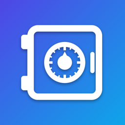

RingvaultPrivacy Policy
In short: Ringvault does not collect, upload, sell or share your personal data. It has no account, no servers, no analytics, no advertising and no tracking. Everything you put in Ringvault stays on your iPhone.
Data stored on your device
Your Ringvault contacts (names, phone numbers, notes and, if you add them, a photo, a birthday and an address), your blocked numbers and your settings are stored only on your iPhone, inside Ringvault's private app storage. Ringvault's Call Directory extension, which runs on your iPhone, reads this storage to provide caller ID and call blocking. This data is never sent to us or to anyone else.
Contacts access (optional)
If you allow it, Ringvault reads and edits the contacts on your phone so you can browse them, copy or move them between lists (a contact's photo, birthday and address come with it), see which contacts appear in both, and export them to a CSV file. You can use Ringvault without granting this access. Ringvault also stores a one-way fingerprint (a hash) of each phone contact so it can tell when a contact was edited; the fingerprint cannot be turned back into names or numbers. You can change Contacts access at any time in Settings › Ringvault.
Photos
When you choose a photo for a contact, iOS's photo picker gives Ringvault only the photo you pick. Ringvault does not get access to your photo library. Photos are shrunk before they are saved on your iPhone.
Caller ID and call blocking
The names and numbers you choose are given to iOS's built-in Call Directory on your iPhone, which handles incoming calls. Ringvault never sees your calls, call history or who is calling you.
Face ID, Touch ID and passcode
App Lock is optional. When it's on, iOS performs the check and only tells Ringvault whether it succeeded. Ringvault never receives your face, fingerprint or passcode data.
Backups and sharing
Backups are CSV files saved on your iPhone, visible to you in the Files app. They contain the details you saved for each contact, including any birthday and address and a small copy of the photo. They are created only when you choose to back up or delete all contacts. When you share a contact or a backup, it goes only where you send it (for example Messages, Mail or AirDrop). When you open a chat in WhatsApp or start a call, the phone number is handed to that app because you asked for it.
Deleting your data
You can delete contacts and backups inside Ringvault at any time. Deleting the app removes all of its data from your iPhone.
Children
Ringvault does not knowingly collect any information from anyone, including children.
Changes
If this policy changes, the updated version will be posted on this page with a new effective date.
Contact
Questions about privacy: chandan@mopplications.com